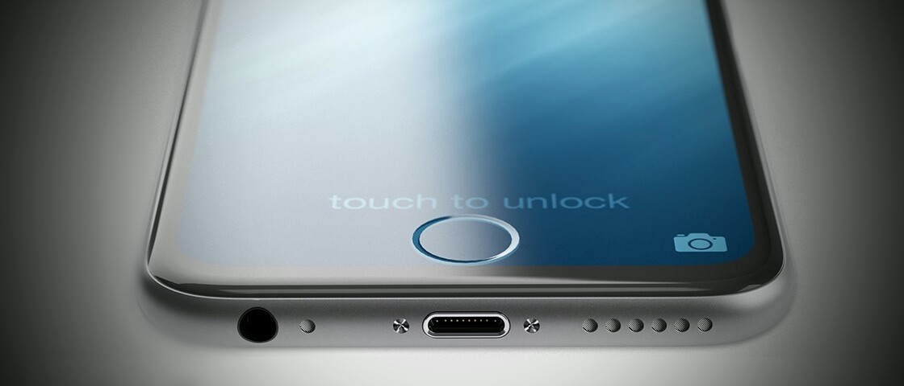
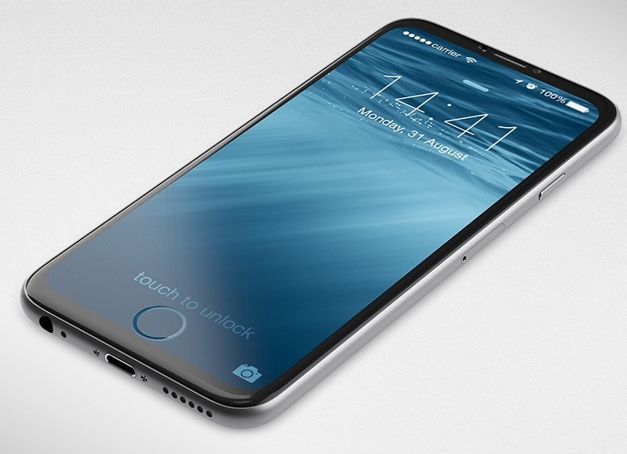

 De acordo com fontes consultadas pelo site DigiTimes, a Apple estaria trabalhando em uma forma de acabar com o botão home em seus iPhones. A empresa teria a intenção de “embuti-lo” na tela de alguma forma, mas não ficou claro se isso aconteceria apenas no campo do software ou se haveria novo hardware envolvido.
Quer dizer, não sabemos se a marca estaria apenas criando um botão virtual na tela, que poderia ser escondido em momentos oportunos como acontece no Android. Contudo, o rumor comenta que o Touch ID não seria eliminado, e a Apple também estraria tentando encontrar uma forma de inseri-lo na tela ou em outra parte do dispositivo.
No caso de o sensor de impressões digitais ser inserido diretamente na tela, futuros iPhones poderiam finalmente eliminar as grandes bordas frontais acima e abaixo da tela. Esses elementos têm sido os grandes vilões para a evolução da Maçã no quesito “área frontal total vs. tamanho da tela”. Praticamente todas as concorrentes já conseguem resultados melhores que a Apple nesse sentido, entregando smartphones menores, mas com telas mais espaçosas.

O DigiTimes diz que essas informações estariam vindo da “indústria taiwanesa”, mas não diz exatamente qual é o grau de confiabilidade desses vazadores de informações. Por isso, é bom absorver essas informações com cuidado. Fora isso, rumores sobre o fim do botão home têm pipocado pela web há tantos anos, que já é um tanto difícil considerá-los como sérios.